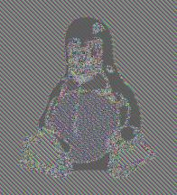
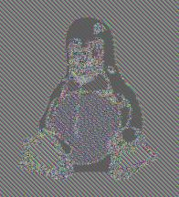

Criptografia simètrica

“Curs d'Introducció a la criptografia” by Jordi Íñigo Griera is licensed under a
Creative Commons Attribution 4.0 International License.
Project hosted at github.com/jig/crypto
Criptografia simètrica
cal que sigui segura i pràctica
el problema és que el requeriment definit fins ara de confidencialitat incondicional no pot generar
xifrats pràctics
(ja que $\|k\| = \|m\|$)
Confidencialitat incondicional
aquell que, a partir del text xifrat, no permet deduir
cap propietat
del text original en clar,
encara que l'atacant tingui capacitat computacional infinita
Confidencialitat computacional
habitualment no ens caldrà confidencialitat (o seguretat) incondicional, sino que podem admetre un cert risc de que el sistema/algorisme no sigui confidencial (segur) en front d'un atacant que tingui recursos computacionals finits
aquesta "cessió" la farem a canvi de tenir uns algorismes més pràctics:
$\|k\| \ll \|m\|$
Confidencialitat computacional
per exemple suposem que tenim $k$ i $m$ de les següents longituds:
$\begin{aligned} \|k\| &= 32 \\ \|m\| &= 8·10^{6} \end{aligned}$
és a dir tenim un nombre de possibles $k$ i $m$:
$\begin{aligned} |k| &= 2^{32} = 4294967296\\ |m| &= 2^{8·10^{6}} = 923234126834\cdots \\ |c| &= 2^{8·10^{6}} = 923234126834\cdots \end{aligned}$
Confidencialitat computacional
la desproporció entre $|k|$ i $|c|$ fa que només una de les claus ens torni un missatge inintel·ligible, per tant, podem saber quina era la clau i el missatge
si la trobem
Confidencialitat computacional
si l'espai de claus es prou gran ($|k|$) no podrem probarles totes
(Moltes claus
i Vigenère: espai de claus)
podem provar $10^6$ k/CPU/s $\approx 2^{20}$ k/CPU/s
ò $10^{13}$ k/CPU/any $\approx 2^{43}$ k/CPU/any
ò $10^{16}$ k/any amb $1000$ CPU $\approx 2^{53}$ k/any
ò $10^{19}$ k/any amb $10^6$ CPU $\approx 2^{63}$ k/any
$\vdots$
$\vdots$
ò $10^{25}$ claus amb $10^6$ CPU un milió d'anys $\approx 2^{83}$ k
ò $10^{29}$ claus amb $10^6$ CPU des del Big Bang $\approx 2^{96}$ k
$\vdots$
si tinc una "sort mitja" només em caldrà la meitat de proves (e.g. necessitarem "només" la meitat de l'edat de l'Univers per a trobar la clau en l'últim escenari)
i si tinc molta sort...
i si tinc molta sort. . .
...la probabilitat de que et toqui la grossa comprant només un número és $10^{-5}$ ($2^{-17}$)
la probabilitat de que et toqui la grossa comprant només un número, $5$ sortejos seguits, és $10^{-25}$ ($2^{-83}$)...
...aquesta és la probabilitat de que trobis la clau per força bruta en un temps negligible
(1 milió d'anys amb 1 milio de CPU's...)
Confidencialitat computacional
amb hardware ad-hoc podem arribar a multiplicar per $10^4$/$10^5$ vegades
($2^{13}$/$2^{17}$ vegades)
Exemple BitCoin: SHA-256 en hardware massivament paral·lel
Espai de claus
En criptografia simètrica farem servir algorismes de xifrat sobre els que el mecanisme més eficient per a un atacant serà provar totes les claus fins trobar la bona
NIST
el NIST recomana (2015)
claus que un atacant
hagi de fer $\frac{1}{2} 2^{113}$ proves
Més exactament, diu que les claus han de tenir una longitud
$\|k\| = 112$ b, mínim
A partir del 2030 recomanarà $\|k\| = 128$ b, mínim
NIST: National Institute of Standards and Technology (EUA)
Security Strength: bits de seguretat o seguretat equivalent
Quantificació de la Seguretat
el NIST recomana les següents longituds de clau (security strength) pels propers anys
l'amença coneguda que pot modificar el calendari és la computació quàntica $\Rightarrow$ AES-256
Criptografia simètrica
hi ha dos tipus de xifrat simètric
ambdós els podem veure com una evolució del
xifrat de Vigenère:
- els primers extenent la clau (bloc d'un sol ús)
- els segons aplicant-ho vàries vegades (aprox)
Xifrat de flux
Xifrat de flux
És una implementació pràctica dels blocs
d'un sol ús (one-time-pad)
en el cas dels blocs d'un sol ús necessitàvem
$\|k\| = \|m\|$
per a després fer:
$c = k \oplus m$
Xifrat de flux
el que farem és generar $k_{\text{generat}}$...
$\|k_{\text{generat}}\| = \|m\|$
...a partir d'una clau $k$ de longitud curta:
$k \overset{f}{\longrightarrow} k_{\text{generat}}$
per a després fer:
$c = k_{\text{generat}} \oplus m$
$k \xrightarrow{\text{PRNG}} k_{\text{generat}}$
la funció PRNG* és un generador de bits que té com entrada una llavor (que serà la
clau de xifrat $k$) i té com a sortida el flux de bits que aplicarem sobre el missatge per a
xifrar-lo amb XOR:
$c = k_{\text{generat}} \oplus m$
*) PRNG: Pseudo Random Number Generator
PRNG: velocitat
el xifrat anirà tant ràpid com siguem capaços de generar bits de $k_{\text{generat}}$
(ja que la funció XOR té un cost negligible en
comparació a “$\xrightarrow{\text{PRNG}}$”)
PRNG: seguretat
una hipotètica funció PRNG és realment PRNG sii cap atacant pot distingir entre les dues seqüències:
- una generada per una font aleatòria "uniforme" (RNG*)
- una generada per la hipotètica funció PRNG
amb una probabilitat rellevantment diferent a $\frac{1}{2}$
*) RNG: Random Number Generator (o TRNG) és un sistema que genera una seqüencia de bits no predible sense caldre cap llavor; no pot ser realitzat de forma algorísmica
(RNG)
RNG: generació
Com implementem un RNG si no és algorísmic?
- Recopilant events d'entrada (I/O) i acumulant els seus paràmatres (habitualment les xifres menys significatives de l'hora en ns ò μs)
- Mitjançant dispositius especialitzats (HSM*)
*) HSM: Hardware Secure Module
RNG
dedicarem una estona a RNG quant veiem HSM
RNG: propietats
- ha de tenir una distribució uniforme (és a dir, a de tendir a tenir el mateix nombre de 1's que de 0's, tendir al mateix nombre de 00's, que de 01's, 10's...
- després d'$n$ bits no s'ha de poder predir el $n+1$ amb una probabilitat diferent de $\frac{1}{2}$
(Tornem al PRNG)
PRNG: propietats
equivalents als RNG:
- distribució uniforme
- després de $n$ no s'ha de poder predir el $n+1$ amb una probabilitat diferent de $\frac{1}{2}$
Òbviament la segona suposant que no és conegui la
llavor del PRNG (la clau de xifrat)
llavor$|k \xrightarrow{\text{PRNG}}$ seqüència pseudo-aleatòria$|k_{\text{generat}}$
Xifrat de flux
Xifrat de flux: algorisme
- tenim una funció $k \xrightarrow{\text{PRNG}} k_{\text{generat}}$
- la funció de xifrat és $c = k_{\text{generat}} \oplus m$
- la funció de desxifrat és $m = k_{\text{generat}} \oplus c$
Xifrat de flux: primer intent
Suposem que tenim una funció PRNG, i fem servir una clau $k$ per xifrar un flux de dades en una connexió (e.g. TLS)
hem de vigilar de no reutilitzar $k \xrightarrow{\text{PRNG}} k_{\text{g}}$, si no:
$\begin{aligned} c_1 &= k_{\text{g}} \oplus m_1 \\ c_2 &= k_{\text{g}} \oplus m_2 \\ c_1 \oplus c_2 &= m_1 \oplus m_2 \end{aligned}$
hem eliminat les claus de l'equació!
Xifrat de flux: segon intent
canviar de claus a cada transmissió
correcte, però costós (poc pràctic)
Xifrat de flux: tercer intent
generar variacions de les claus a cada transmissió
suposem que tenim una funció
$\begin{aligned} k' &= f(k, r) \\ c &= k' \oplus m \end{aligned}$
i enviem cada $r$ juntament amb cada $m$
correcte i pràctic
Xifrat de flux: consideracions
en resum: hem de generar un $r$ diferent per a cada missatge
(anomenat nonce)
si tenim una comunicació bidireccional com
HTTPS (TLS) cal:
- o bé generar un $r$ diferent per a cadascun dels dos sentits
- o bé generar una $k$ diferent per a cadascun dels dos sentits
- o totes dues coses $\leftarrow$
Xifrat de flux: seguretat
el xifrat de flux serà tan segur com:
- serà tan segur com la correcció de la hipòtesi de que la funció PRNG és realment PRNG
- l'espai de claus (de llavors) sigui tant gran que sigui improbable que un atac de força bruta sigui factible
- que es compleixin les hipòtesis d'ús
Exemples
Xifrats de bloc
Funcions
\[ \begin{aligned} X & = \{ a,b,c,d \} \\ Y & = \{ 1,2,3,4 \} \\ \end{aligned} \\ \]
$f(a) = 1 \quad f(b) = 4 \quad f(c) = 2 \quad f(d) = \text{n.d.}$
per tant $f$ no és una funció sobre $X$
(o al menys no és una funció "ben definida" sobre $X$)
\[ \begin{aligned} X & = \{ a,b,c \} \\ Y & = \{ 1,2,3,4 \} \\ \end{aligned} \\ f : X \rightarrow Y \]
$f(a) = 1 \quad f(b) = 4 \quad f(c) = 2$
\[ \begin{aligned} X & = \{ a,b,c \} \\ Y & = \{ 1,2,3,4 \} \\ \end{aligned} \\ f : X \rightarrow Y \\ \]
La funció completa és:
$f(a) = 1 \quad f(b) = 4 \quad f(c) = 2$
e.g. la imatge de $b$ és $4$, la preimatge de $4$ és $b$
Tots els elements d'$Y$ que tenen preimatge segons $f$ és
$Im(f) = \{1,2,4 \}$
Funció bijectiva
tots els elements d'$Y$ tenen preimatge o el que és equivalent: $Im(f) = Y$ (per tant, $|X|=|Y|$)
per tant, la inversa d'$f$ (que simbolitzarem $f^{-1}$) està "ben definida"
Funció inversa
la funció inversa de l'anterior $f^{-1}$
tots els elements d'$X$ tenen preimatge
i la inversa d'$f^{-1}$ está (òbviament) "ben definida"
per tant $f^{-1}$ també és bijectiva
permutació
\[ \begin{aligned} X & = \{ a,b,c \} \\ \end{aligned} \\ f : X \rightarrow X \]
una permutació és una funció bijectiva d'$X$ sobre sí mateix
Xifrat de bloc: model
podem representar el xifrat amb una permutació $f$
$f : X\rightarrow X$
on $X$ és el conjunt de possibles blocs (tant de text en clar i xifrat)
i podem representar la funció de desxifrat com a la seva inversa $f^{-1}$
$f^{-1} : X\rightarrow X$
és a dir:
$\begin{aligned} c &= f(m) \\ m &= f^{-1}(c) \end{aligned}$
Xifrat de bloc: mida
$\begin{aligned} f &: X \rightarrow X \\ f &: \{0,1\}^n \rightarrow \{0,1\}^n \end{aligned}$
si implementem $f$ en una taula amb $2^n$ entrades, ocupem $n·2^n$ bit
on $n$ és la mida del bloc
(si tenim missatges més llargs d'$n$ haurem de segmentar-los en blocs: modes d'operació)
Xifrat de bloc: permutació aleatoria
aquestes $2^{n}$ entrades (de longitud $n$) les haurem d'escollir de forma aleatòria
de forma que no podrem conèixer $f(x)$ sense conèixer la taula
$\downarrow$
RP: Random Permutation
Xifrat de bloc: model
per exemple, per DES que té una mida de bloc d'$n=64\text{ b}$ ens calen:
$64·2^{64} \text{ b} = 2^{70} \text{ b} = 2^{67}\text{ B} = 2^{37}\text{ GB} = 128\text{ EB}$
... per a cadascuna de les claus $k$
òbviament no és factible implementar els xifrats moderns directament amb una taula indexada
Xifrat de bloc: $f_k$
en realitat per a que el xifrat sigui segur necessitarem una "familia" de funcions equivalents però diferents. Les indexarem en funció de la clau, $k$:
$\begin{aligned} f_k &: X \rightarrow X \\ f_k &: \{0,1\}^n \rightarrow \{0,1\}^n \end{aligned}$
o també, podem redefinir $f$ i afegir-li $k$ com a paràmetre:
$\begin{aligned} f &: K \times X \rightarrow X \\ f &: \{0,1\}^{\|k\|} \times \{0,1\}^n \rightarrow \{0,1\}^n \end{aligned}$
on $K$ és l'espai de claus $k$ (o conjunt de claus)
Xifrat de bloc:
permutació pseudoaleatòria
igual que per al xifrat de flux ens calia un flux de bits aparentment aleatoris per a qui no tingués la llavor (la clau $k$)...
...per a xifrat de bloc farem servir permutacions pseudoaleatòries (PRP*) en les que la permutació serà aparentment aleatòria per algú que no conegui la clau
això ens permetrà fer xifrats de bloc factibles, intercanviant una quantitat immensa de memòria per una computació abordable
PRP: Pseudo Random Permutation
Xifrat de bloc:
permutació pseudoaleatòria
com en el cas de PRNG, per seguretat cal que les PRP siguin indistingibles de les RP
a més cal que tant $f_k$ com $f_k^{-1}$ es puguin calcular de forma eficient
construcció de xifrats de bloc
xifrats de bloc: classes bàsiques
hi ha dues classes de xifrat de bloc
(és a dir, dues maneres d'implementar
PRP)
- xifrat de substitució
- monoalfabètics ($\approx$ César)
- polialfabètics (Vigenère)
- xifrat de transposició
a partir d'ara farem servir $e()$ i $d()$ en lloc
de les $f()$ i $f^{-1}()$ usades fins ara
xifrats de bloc: composició
per si sols, les 3 classes bàsiques de xifrat de bloc són insegures
però combinant-les podem obtenir seguretat creixent
substitució polialfabètica
per a un bloc de longitud $t$ elements, el que fem és fer servir $t$ permutacions $p()$ independents
| $m$ | pos1 | pos2 | pos3 | pos4 |
| $c=e(m)$ | $f($pos1$)$ | $f($pos2$)$ | $f($pos3$)$ | $f($pos4$)$ |
i simplement: $d$ és la seqüència de permutacions inverses $f^{-1}$
(el xifrat de Vigenère és un tipus de xifrat de substitució polialfabètica)
substitució polialfabètica: seguretat
com en el cas de Vigenère podem recuperar el text original mitjançant anàlisi freqüencial
transposició
per a un bloc de longitud $t$ elements, el que fem és moure els mateixos elements entre sí
per exemple, en un sistema amb blocs de 4 lletres una funció $e$ de xifrat podria ser:
| $m$ | pos1 | pos2 | pos3 | pos4 |
| $c=e(m)$ | pos3 | pos1 | pos4 | pos2 |
i simplement: $d = e^{-1}$
transposiciÓ: seguretat
òbviament són insegurs ja que no només la freqüència dels símbols d'entrada és manté, si no que els propis símbols es mantenen (tot i que en posicions modificades)
composició de xifrats de bloc
una composició de dos xifrats de bloc, la podem escriure:
$\begin{aligned} c_1 &= e_1(k_1, m)\\ c_2 &= e_2(k_2, c_1)\\ &\vdots\\ c &= e_1(k_n, c_{n-1})\\ \end{aligned}$
cadascuna de les claus $k_i$ pot ser independent, però habitualment és genera en un procés anomenat
expansió de clau:
$k \xrightarrow{\text{PRNG}} \{k_1, k_2, \dotsc, k_n\}$
composició de xifrats de bloc:
objectius de la composició:
- substitució: dóna confusió, que permet dificultar l'obtenció de la clau a partir del text xifrat
- transposició: dóna difusió, que permet difondre les redundàncies del text en clar, de forma que no apareguin en el text xifrat
etapes o rounds: les dues funcions s'agrupen en parelles i s'apliquen diferents cops (amb diferents claus) fins a obtenir un xifrat segur
$c_i = e_1(k_i, c_{i-1})$
AES
Advanced Encryption Standard
AES
AES és un xifrat de bloc amb:
- bloc: $128$ bit ($16$ Byte)
- clau:
- $128$ bit $\implies$ 10 etapes
- $192$ bit $\implies$ 12 etapes
- $256$ bit $\implies$ 14 etapes
AES
cadascuna de les 10|12|14 etapes es composa de
SubBytes: substitució de bytes en funció d'una taula fixa de 256 entradesShiftRows: transposició de bytes fixaMixColumns: 4 multiplicacions modulars de 4 Byte, valors fixesAddRoundKey: $\text{bloc} \oplus k_{i}$ (subclau $k_{i}$)
això xifra el bloc, i es passa al següent on es fa el mateix canviant la la subclau
SubBytes

(font Wikipedia)
ShiftRows

(font Wikipedia)
MixColumns
(font Wikipedia)
AddRoundKey

(font Wikipedia)
Expansió de clau
Cadascuna de les etapes (rounds) fa servir una subclau $k_{i}$ diferent
cadascuna de les subclaus $k_{i}$ es deriva de la clau $k$
Nota 1: les subclaus s'apliquen ($\oplus$) "entre" les etapes per tant cal una subclau més que etapes (11|13|15)
Nota 2: calen més etapes en els AES de clau llarga per "aplicar" el major espai de claus sobre el missatge en clar
AES: vulnerabilitats
...l'estadística del missatge en clar apareix a al text xifrat igual que en el xifrat del Cèsar (!)
ara els blocs són de $16$ B, no d'$1$ B per tant l'estadística és menys important
($|\text{bloc}|=2^{128}$), però en seqüències constants
(per exemple, com les d'imatges bitmap) es poden donar blocs sencers idèntics
 

(font Wikipedia)
modes d'operació
aquesta "vulnerabilitat" és una propietat de tots els xifrats de bloc
la contramesura és per tots la mateixa: no xifrar mai bloc a bloc, cal acumular part del xifrat anterior en el bloc actual
aquest encadenament se'n diu modes d'operació
(i no és opcional)
els modes d'operació s'han d'aplicar a tots els xifrats de bloc
Modes d'operació
si acumulem estat durant el xifrat, podem fer servir aquest estat sobre el xifrat del següent bloc
- ECB: Electronic Code-Book,
- no-op $\Rightarrow$ no s'ha de fer servir a la pràctica (...)
- CBC: Cipher Block Chaining
- el bloc $i-1$ s'aplica $\oplus$ sobre el bloc en clar $i$
- OFB: Output Feedback
- xifres el xifrat anterior, i el resultat $\oplus$ del missatge en clar
- CTR: Counter
- xifres un comptador, i el resultat $\oplus$ del missatge en clar
ECB: Electronic Code-Book

(font Wikipedia)
CBC: Cipher Block Chaining

(font Wikipedia)
OFB: Output Feedback

(font Wikipedia)
CTR: Counter

(font Wikipedia)
Vector d'inicialització (IV)
els diferents encadenats requereixen d'una llavor incial, prèvia, per començar l'encadenat
això fa que en lloc de transmetre $n$ blocs com en ECB, calgui transmetre'n $n+1$
- IV en CBC: és l'hipotètic bloc xifrat $-1$
- IV en OFB: és el bloc que es xifra constantment $e(e(e(\cdots e(\text{IV}))))$ i s'aplica sobre els blocs en clar (amb $\oplus$)
- IV en CTR: és el valor inicial del comptador que és xifra ECB, i s'aplica sobre els blocs en clar (amb $\oplus$)
AES_128_CTR és efectivament un xifrat de flux fent servir AES_128_CTR com a PRNG (sent $k$ la llavor, i l'$IV$ el nonce)
Modes d'operació amb autenticació
AEAD: Authenticated Encryption with Associated Data
actualment apareixen modes d'operació que a més a més ofereixen MAC aconseguint un rendiment superior a fer servir xifrat + MAC (només lleugerament inferiors al xifrat sol)
els dos exemples més usats i recomanats en l'actualitat són:
- CCM ò Counter with CBC-MAC, és la combinació d'AES-CTR amb un CBC-MAC
- GCM ò Galois Counter Mode, també una combinació d'AES-CTR però ara amb amb una multiplicació modular; permet velocitats superiors a CCM
AES: rendiment
Intel, AMD o ARM disposen d'instruccions específiques per a tal d'accelerar el des/xifrat AES (i alguns d'ells també tenen instruccions per a GCM)
Segons l'anàlisi de 戴维 (Wei Dai) els rendiments en implementacions purament software mesurades en Intel Core 2 (2009, MMX/SSE2, 32 b):
- AES-128: 1,1 Gbps
- AES-192: 0,9 Gbps
- AES-256: 0,7 Gbps
bps: bits per segon (ò b/s)
AES rendiment comparatiu
- AES-128: 1,1 Gbps (seguretat 128 bit)
- AES-192: 0,9 Gbps (seguretat 192 bit)
- AES-256: 0,7 Gbps (seguretat 256 bit)
- Salsa20: 3,2 Gbps (seguretat 256 bit)
- ChaCha20: 3,2 Gbps (seguretat 256 bit)
- DES: 250 Mbps (seguretat 56 bit)
- 3DES: 100 Mbps (seguretat 112 bit)
- AES "hardware": ~8 vegades més ràpid (Intel, 2011)
bps: bits per segon
AES: vulnerabilitats
hi ha diversos atacs que permeten realitzar cerques de forma més ràpida que un atac de força bruta
- AES-128/192/256: recuperació de clau en una quarta part del temps que força bruta $\Rightarrow$ és perden 2 bits
- AES-192/256: sii claus relacionades, complexitat $2^{119}$ (contramesura: claus aleatòries)
- el bloc de $128$ b limita l'ús del xifrat fins a $2^{64}$ blocs ($2^{68}$ B) a causa de la paradoxa de l'aniversari (contramesura: canviar la clau quan s'hagi usat per a $2^{68}$ B)
no són rellevants en quan a la seguretat pràctica
aquestes són les vulnerabilitats conegudes...
AES: més vulnerabilitats
AES porta des del 2000 públic: això implica un escrutini públic o secret sever
segons els "papers d'Edward Snowden" l'NSA està estudiant-ne les vulnerabilitats (no públicament)
altres "grans" organitzacions és altament improbable que no hi dediquin recursos importants
AES: més vulnerabilitats
algorismes quàntics: amb l'algorisme de Grover les cerques en bases de dades no ordenades tenen complexitat $O({\sqrt{2^b}})$
(òbviament, en computació clàssica té complexitat $O({2^b})$)
Nota: $b$ són els bits de longitut de la clau AES: $128$, $192$ ò $256$
Computació quàntica
- els computadors quàntics actuals no tenen aplicació pràctica: a banda de per "trencar claus" serveixen per a simular... fenòmens de física quàntica
- es creu no hi haurà computació quàntica pràctica abans del ~2030
- però per ser robustos a l'algorisme de Grover, només hem de doblar la longitud de claus, per exemple passar a AES-256 que donaria una fortalesa equivalent a 128 bits
- poc després es va demostrar que l'algorisme de Grover és òptim
per tant, es considera que la criptografia simètrica és robusta en front de la computació quàntica...
DES
Data Encryption Standard
DES
- bloc: $64$ bit ($8$ Byte)
- clau: $56$ bit ($7$ Byte)
16 etapes
insegur, vulnerable a atacs de força bruta
3DES / Triple-DES / TDES
El xifrat és $c = e(k_1, d(k_2, e(k_1, m)))$
- bloc: $64$ bit ($8$ Byte)
- clau: $112$ bit ($14$ Byte, i.e. $k=k_1|k_2$)
per què no doble-DES? o per què no $k=k_1|k_2|k_3$?
atacs Meet in the Middle
Meet in the Middle: plantejament
suposem que volem ampliar la seguretat de DES xifrant dues vegades amb DES estàndard:
$c = e(k_1, e(k_2, m))$
Meet in the Middle: forma
(condició) suposem que tenim el xifrat d'un bloc $c$, i en sabem el valor en clar $m$ (això no sempre és possible, però és perfectament factible)
$c = e(k_1, e(k_2, m))$
i girem
$e(k_2, m) = d(k_1, c)$
Meet in the Middle: truc
Calculem $x = e(k_i, m) \, \forall i \,$ (cost $2^{56}$)
situem els valors una llista i els ordenem segons $x$ (cost $2^{56}·\log_2{2^{56}}\approx2^{62}$, cost en memòria $2^{56}$)
calculem $x' = d(k_i, c) \, \forall i \,$
mirem si hi ha un $x \overset{?}{=} x'$ (cost 1)
...cost total $\approx2^{62}$ (cost en memòria $2^{56}$)